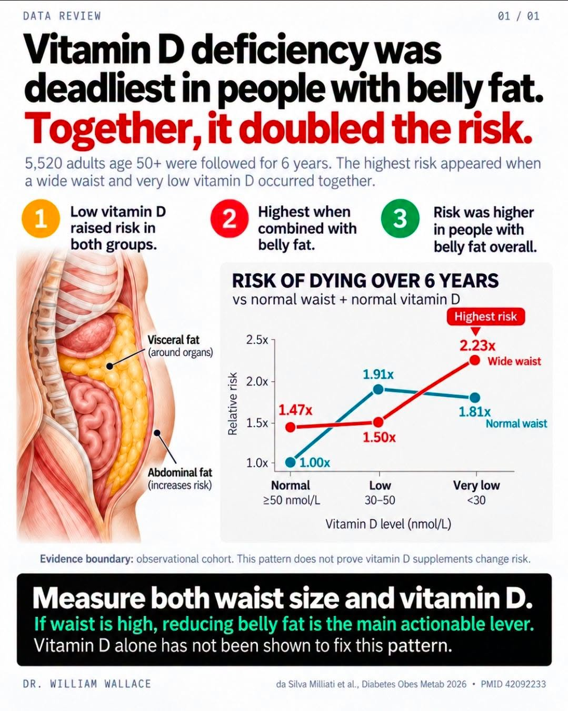

One of many problems with carrying around too much visceral fat is that it reduces bioavailability of vitamin D. The mechanisms by which this occur are pretty well understood. Observational studies suggest that it has long-term consequences.
#vitamindHD #obesityHD #visceralfatHD
Vitamin D deficiency was associated with the highest mortality risk when it occurred alongside abdominal obesity.
Researchers followed 5,520 adults aged 50+ for six years, grouping them by waist circumference and blood 25(OH)D. Compared with people who had both a normal waist and sufficient vitamin D, those with abdominal obesity and vitamin D deficiency had 2.23 times the risk of death.
The result is more nuanced than “low vitamin D causes death.” Abdominal obesity increased risk even when vitamin D was sufficient, and low vitamin D was also associated with higher mortality in people without abdominal obesity. This was an observational study, so it cannot tell us whether vitamin D deficiency, abdominal fat, underlying illness, or some combination is driving the association.
Waist circumference provides information about abdominal adiposity that body weight alone can miss, while 25(OH)D tells you whether vitamin D status is actually low.
If your waist circumference is elevated, reducing abdominal fat through sustainable fat loss, regular physical activity, resistance training, and better diet quality addresses a well-established cardiometabolic risk factor. If vitamin D is genuinely deficient, it should also be identified and corrected for established clinical reasons. What this study does not show is that taking vitamin D supplements will erase the mortality risk associated with abdominal obesity.
da Silva Milliati J, et al. Diabetes Obes Metab. 2026;28(8):6607–6617. PMID: 42092233.
